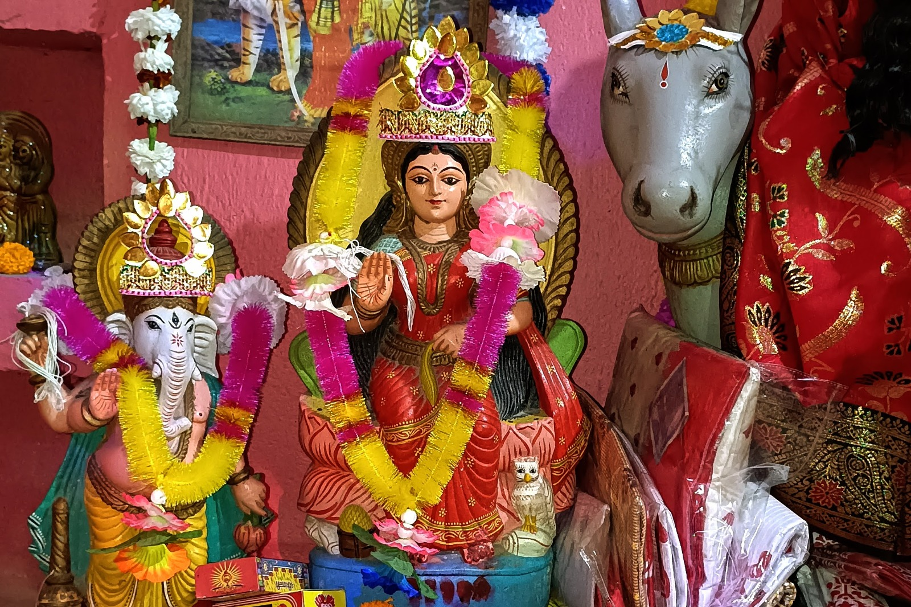
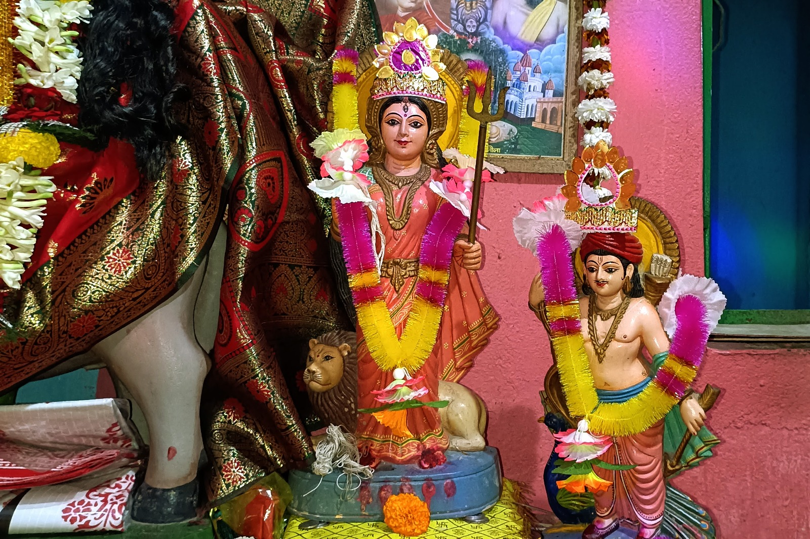
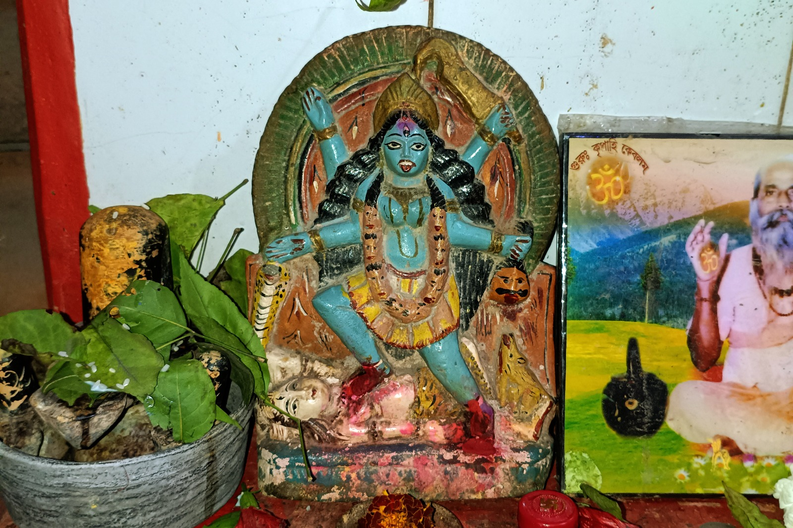
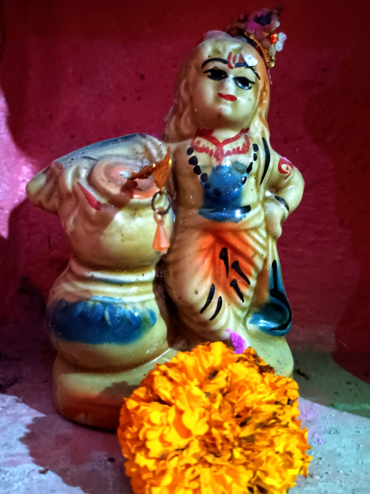
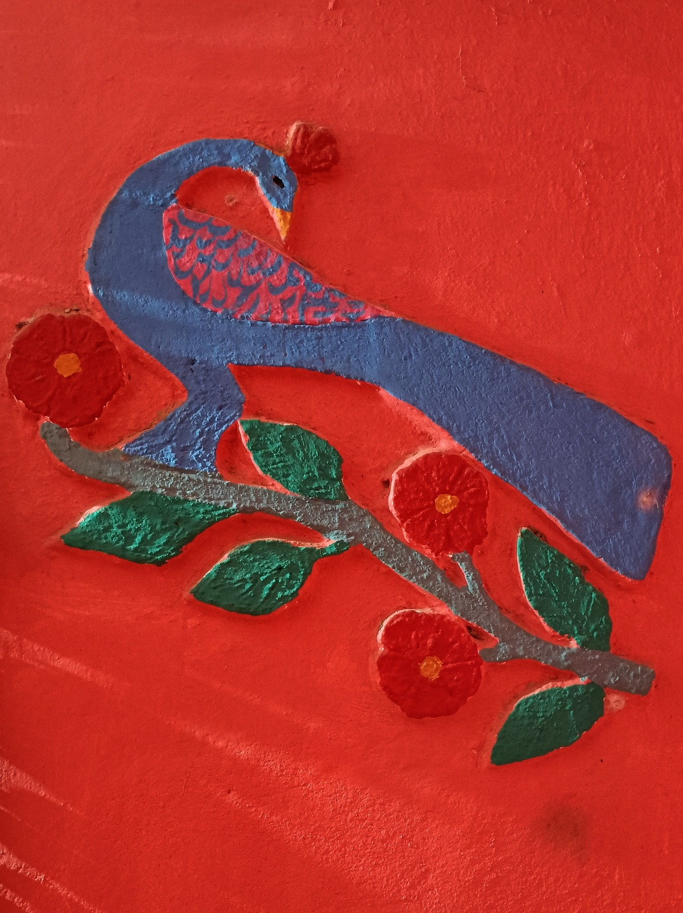

Ganesha
Der Gott des glückverheißenden Neubeginns.
Er wird als erster aller Götter verehrt.
Der Gott des glückverheißenden Neubeginns.
Er wird als erster aller Götter verehrt.

Die Göttin des Reichtums und Wohlstands.
Sie schenkt Glück und Segen.

Das Symbol für Kraft und Schutz.
Sie vernichtet die Kräfte des Bösen.

Der Gott des Krieges und der Tapferkeit.
Er ist ein Symbol für Jugend und Mut.

Die Vernichterin des Bösen.
Sie verkörpert göttliche Kraft und symbolisiert Frieden.

Die Göttin des Wissens und der Künste.
Sie segnet uns mit Wissen und Weisheit.

Mutter Shitla wird gewöhnlich auf einem Esel reitend dargestellt. In einer Hand hält sie einen Besen und in der anderen eine Getreideschaufel oder einen mit Wasser gefüllten Krug. Mit dem Besen vertreibt sie Krankheiten und Unreinheiten, während sie mit dem kühlen Wasser aus ihrem Krug das Leid und die Sorgen der Menschen lindert.
In mehreren puranischen Überlieferungen gilt sie als eine göttliche Erscheinungsform der Shakti, die im Skanda Purana beschrieben wird.
Der Überlieferung zufolge brach einst auf der Erde eine verheerende Seuche aus. Die Menschen waren hilflos und beteten zu den Göttern. Daraufhin baten die Götter Gott Shiva um Hilfe. Durch Shivas Gnade erschien eine Göttin, die in der Lage war, Körper und Geist der Menschen zu beruhigen und sie von Krankheiten zu befreien. Diese Göttin ist Mutter Shitala.
Einer anderen Überlieferung zufolge ist sie eine besondere Erscheinungsform der Göttin Parvati, die auf die Erde herabstieg, um das Leid der Menschen zu lindern.
In Bengalen wird die Shitala-Puja gewöhnlich im Monat Chaitra (März–April) gefeiert. Am Tag der Shitala-Puja bringen die Gläubigen der Göttin Prasad dar. Denn das Wort „Shitala“ bedeutet kühl oder lindernd und symbolisiert Frieden, Ruhe und Heilung.
Nach hinduistischer Überlieferung schützt Mutter Shitla die Menschen vor Krankheiten und Seuchen, wenn sie ihr mit Hingabe und Ehrfurcht verehren.
Ein bekanntes Mantra von Mutter Shitla lautet:
„Om Shitalayai Namah.“
Ein weiteres hingebungsvolles Mantra lautet:
„Om Hreem Shreem Shitalayai Namah.“
Es wird geglaubt, dass man durch das Rezitieren dieser Mantras mit Hingabe und einem friedvollen Geist den Segen von Mutter Shitla erhält.
Die Geschichte von Mutter Shitla lehrt uns, dass Gesundheit unser größter Reichtum ist. Durch Sauberkeit, Glauben und Menschlichkeit können wir Krankheiten vorbeugen und Leid lindern. Wenn wir Hingabe und Demut in unseren Herzen tragen, begleitet uns stets der Segen der Göttin.


Wenn Sie ein Anliegen oder eine Frage haben,
wenden Sie sich bitte an uns.
Wir werden unser Bestes tun, um Ihnen zu helfen.
E-Mail: shitla.mandir.varied646@passfwd.com
Feedback gebenHier finden Sie das heutige bengalische Datum und den Panchang (hinduistischer Kalender).





Herzlich willkommen im Choutala-Shitala-Tempel! Diese Website wird von unserer Familie gepflegt.
Sie wurde erstellt, um die Gläubigen über die Geschichte des Tempels, die Puja-Zeremonien und die Veranstaltungen zu informieren.
Kommen Sie und erleben Sie diesen heiligen Ort der Hingabe und des Friedens.